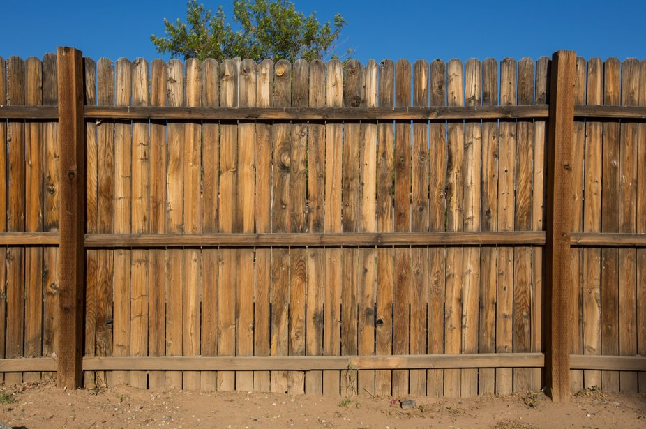
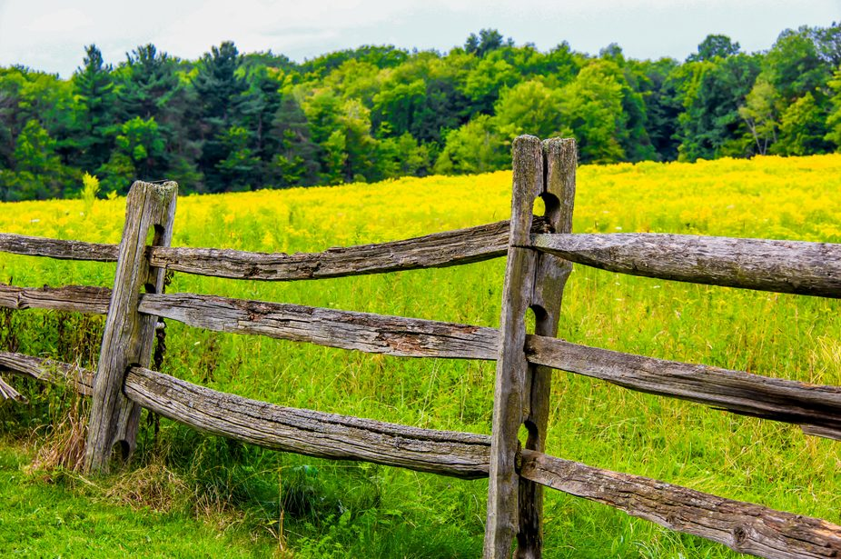
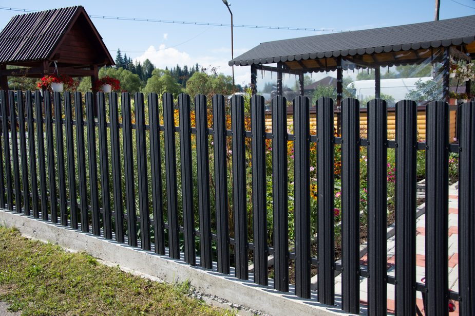

Jacksonville, North Carolina
Fence company in Jacksonville, NC
Wood, vinyl, chain-link, aluminum, and farm fencing for houses and commercial lots. New lines, replacements, repairs, and gates are quoted from the property.
- Homes, farms, and commercial lots
- Posts set for coastal-plain sand
- Free on-site estimates
Get a free quote
Tell us the town, the fence type, and roughly how much line you need.
Materials and work
Fence services in Jacksonville
Start with the job. A backyard screen, a pool barrier, a dog run, and a pasture line are not the same fence.

Vinyl fencing
Privacy, picket, and ranch-rail vinyl for a straight line without a yearly stain. A practical fit for humid Onslow County summers.
View serviceWood fencing
Privacy, picket, and shadowbox wood you can stain to the house. Posts are set in concrete for sandy coastal-plain soil.
View service
Chain-link fencing
Galvanized and vinyl-coated chain link for yards, dogs, and work lots. A screen can be added where you need a visual break.
View service
Aluminum fencing
Open aluminum for front yards, pools, and sloped lines. It stays straight in humidity and does not need paint.
View service
Farm fencing
Split rail, woven wire, pipe-and-cable, and electric fence for horses, cattle, and acreage around rural Onslow County.
View service
Commercial fencing
Heavier chain link, vehicle gates, and screens for yards and job sites. Built to a commercial spec, not a backyard panel.
View serviceStyles
Fences we install
Privacy, vinyl, chain link, aluminum, and rail from the crew that walks the line in Jacksonville and Onslow County.

Houses
Backyard privacy, pet runs, pool barriers, and property-line replacements. Most in-town jobs are a 6-foot wood or vinyl line on the side and rear, with a gate that fits the mower. Front yards inside the city stay at the 4-foot limit.
Wood fencingLots and acreage
A storage yard needs heavier chain link and a vehicle gate. A pasture in Richlands or Hubert needs wire or rail sized for the animals, not a backyard panel. Tell us how the ground is used and we will spec the line for that use.
Commercial fencingHow a fence job is quoted
- 1Name the job. Screen, contain animals, mark a line, or secure a lot. That choice picks the material faster than a photo.
- 2Walk the ground. Sand, standing water, slope, trees, and the distance from the driveway all change the posts and the labor.
- 3Count the openings. A fence with the wrong gate is a daily problem. Walk gates and drive gates are priced as their own pieces.
- 4Repair or replace. Sound posts can take new panels. Posts that have failed in the sand cannot. We say which one you have.
Repairs and gates
Leaning posts, missing boards, and sagging gates are a large share of the calls after a storm. If the rest of the line is sound, we repair the failed section. If the posts have let go, we will tell you to rebuild that run.
Gates are hung on posts sized for the opening, with hardware that can carry the weight. A walk gate and a drive gate are different builds.
Request an estimateService area
We work in Jacksonville and nearby communities, roughly a 25-mile drive. Each town puts a different demand on the fence: salt air near the water, HOA rules in subdivisions, and longer farm lines inland.
Questions before you call
How much does a fence cost in Jacksonville, NC?
The price follows the line we measure: length, height, material, gates, and whether an old fence has to come out. Sandy soil, a slope, tree roots, and a long carry from the street change the labor. We do not publish a per-foot menu. The estimate comes from the property.
Can you install a fence in the sandy soil around Onslow County?
Yes. Most lots from Jacksonville out toward the river sit on coastal-plain sand, and some low yards hold water after a hard rain. Posts go in concrete, deep enough to stay put, with the mix crowned so water does not pool at the post. If a stretch stays soft or saturated, we say so before we set it.
Do you offer wood, vinyl, chain link, aluminum, and farm fencing?
Yes. Wood and vinyl cover privacy and picket work. Chain link covers yards, dogs, and commercial perimeters. Aluminum covers open ornamental lines and pools. Farm fencing covers rail, wire, pipe-and-cable, and electric for animals on larger parcels. Repair work is part of the same call.
Do I need a permit to put up a fence in Jacksonville or Onslow County?
Inside the City of Jacksonville, published standards limit a residential front-yard fence to 4 feet and a side or rear fence to 6 feet, and the fence cannot sit in an easement, a sidewalk, or the right-of-way. In unincorporated Onslow County, the county says a zoning permit is not required for a fence. An HOA can be stricter than either one. Confirm the rule for your parcel before posts go in.
Can you repair a storm-damaged fence, or does the whole line have to come out?
If the posts are still sound, we replace the panels, rails, or gate that failed and leave the rest. If the posts have rotted or pulled out of the sand, new boards on those posts will lean again, and that stretch should be rebuilt. We will tell you which it is after we see the line.
Ready to walk the line?
Call (910) 519-2447 or send the lot details. Estimates are free.